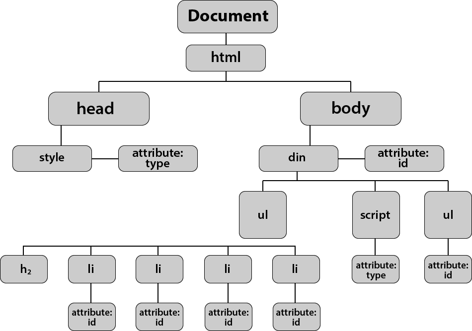

𝓌𝑒𝓁𝒸𝑜𝓂𝑒 𝓉𝑜 𝓂𝓎 𝟥𝓇𝒹 𝓈𝓅𝓇𝒾𝓃𝓉 𝒷𝓁𝑜𝑔 𝓅𝑜𝓈𝓉
Not to be dramatic but I am amazed I even reached this point in the sprint.
In order to get to here, right now, posting this blog, my partner had to chainsaw trees that fell and blocked our (extremely long) driveway, then
shovel the car out of this snow. I did a skid/ burnout and dug a hole with one of the wheels, getting us stuck again
All of this just so I could drive to get to get power/ actually bathe/ cellphone coverage/ internet to post a blog after a snow storm destroyed our local power lines.
our village has no time estimate for the power line repair dates!! Plz have me in your prayers for sprint 4.

Now, onto the technical stuff (what I'm actually supposed to be writing about)
JavaScript and its relationship to HTML and CSS:
To describe Javascript and its relationship to HTML & CSS, I will be using the example of a basic everyday object - a chair.
here is a picture of a chair (in case you weren't sure what they looked like)
HTML is used to structure the code of a webpage, this could be compared with the structure of a chair.
CSS is used for the design and presentation of a website. For example: font style, font size, background colour (or color, for those who are blessed enough to have this spelling) etc. With a chair, this would equate to the materials used e.g: birch wood, tan leather, foam, etc.
Javascript is the dynamic or interactive elements in the page. It's what happens when you click something, hover over other things. In the case of a chair it could be the interactive uses of a chair- you can sit on a chair, stand on it to reach something, sleep in it (if you're elderly) etc.
Explain control flow and loops using an example process from everyday life for example, 'waking up' or 'brushing your teeth' (but not those)
Loops & Control Flow
Loops are a very precise set of instructions that get repeated until a condition is met.
Control flow is the order those instructions are followed in.
As a comparison, I will be using the example of baking a cake:
A control flow in a baking scenario would look as follows:
- get utensils & bowls
- IF: no measuring cup, use regular cup
- ELSE: no cups, use the eyeball method
- crack 3 eggs into bowl
- LOOP: use whisk in circular motion fast until fluffy
- add 4 cups of flour into bowl
- measure 1 cup of sugar and add into bowl
- IF: no sugar, use salt
- LOOP: mix together until no lumps
- pour into baking tin
- bake
The DOM
The DOM stands for Document Object Model which gives us the ability to interact with objects in an HTML Document. Objects are often organised within a "tree".

This is the organised structure of the DOM. We use this structure to access and manipulate specific elements in the document.
For example we can add events through Javascript and make our page more dynamic, measure things like clicks, and also remove elements.
The difference between accessing data from arrays and objects
Arrays store collections of information in square brackets []
e.g.
let pantryItems = [bread, milk, nuts]
an object is value pairs with collections of information
e.g:
let contactInfo = {
address: 2 Kea street
contact number: 0274442737
email: veetaorinko@gmail.com
}
In an object, information would be accessed through the "keys" e.g. via the command contactInfo.address, contactInfo.email, etc
Functions are and why they are helpful
Functions are a list of instructions that you give your computer, like a recipe. They are code that performs a task when prompted. These are helpful as we can break down our code into small executable tasks which make the functions easier to access. We can call on the function instead of writing the code out repetitively